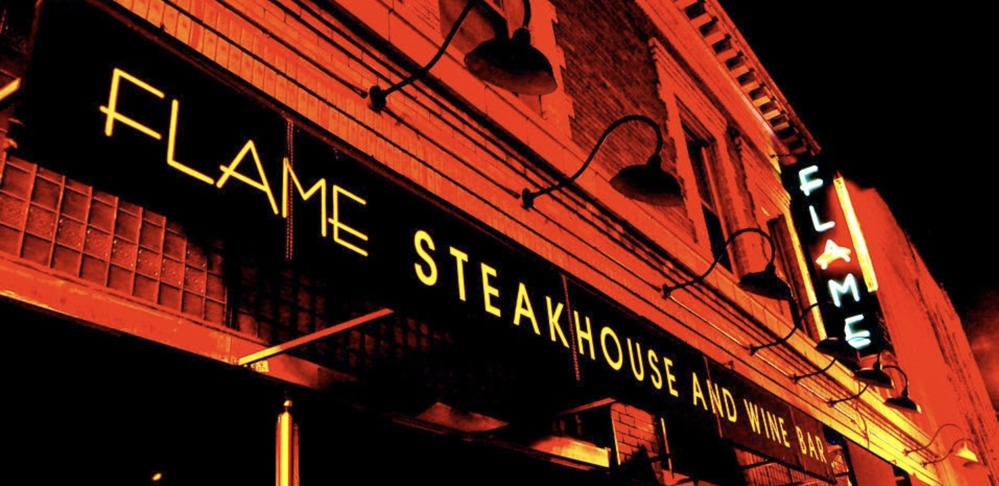
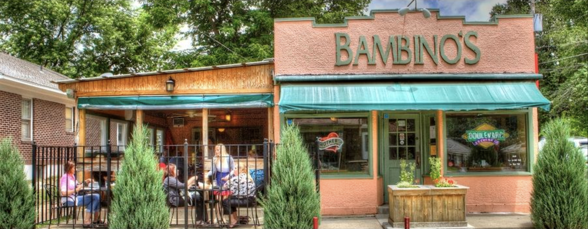

Information
Springfield, Missouri is a delightful midwest city. Springfield is home
to many great people including Brad Pitt, John Goodman, and Payne Stewart.
Springfield is also the home of cashew chicken and drive thrus. Route 66
passes right through the heart of the city and makes for a great sightseeing
adventure. There is plenty more to explore in Springfield and we hope to
welcome you soon!
Springfield's Finest Dining
Flame

Flame Steakhouse is arguably the best steakhouse in Springfield. You are
sure to have one of the finest steaks of your whole life at Flame. Flame
is located on historic Walnut street and is within walking distance to many
Downtown attractions.
Leongs

Leongs is home of Springfield's most popular dishes, Cashew Chicken. In
the 1960's chef David Leong added cashew chicken to his menu changing
local chinese food for the better. You are almost certain to find Cashew
Chicken on any Chinese restaurant's menu in the area. Make a trip to Leongs
to see where the famous dish was created!
Bambinos

If you are looking for great italian cuisine with a cozy atmosphere, look
no further. Bambinos is a cute italian restaurant that offers some of the
most delicious italian food in all of Springfield. Not only do they have
delicious entree choices, they have great dessert choices as well. The owners
also own a delightful bakery serving fresh cannolis and tiramisu that they
offer in house at Bambinos. Once you make your first trip to Bambinos, it
is only a matter of time before you make your second.
Cesars Old Mexico

There are many Mexican restaurant's in Springfield but none of them even
compare to Cesars Old Mexico. Cesars is serving some of the tastiest Mexican
food in all of Springfield. Not only is their food great but the vibe of the
restaurant is one of a kind. The flashing neon surrounding you and high ceilings
make for a fun environment that allows you to feel like you are in a new realm.
Their specialty margaritas are just as out of this world as the building itself.
Be careful though, they are sure to make you feel some kind of way!